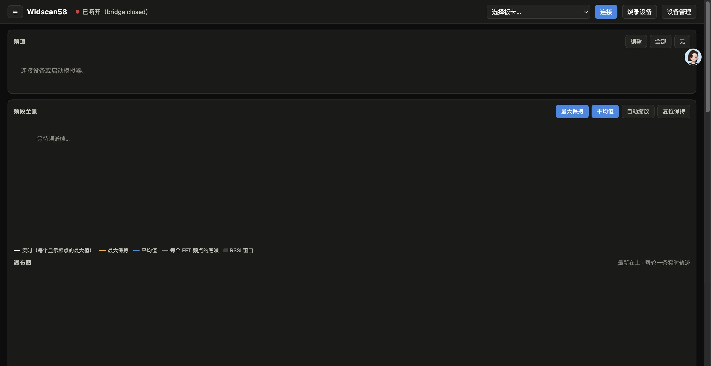
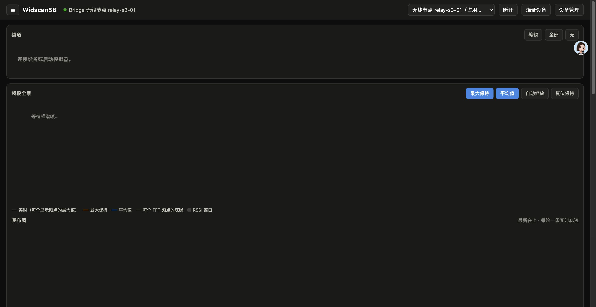
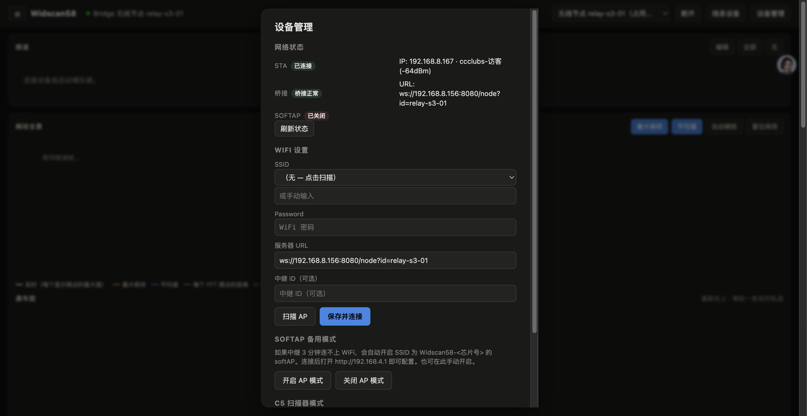
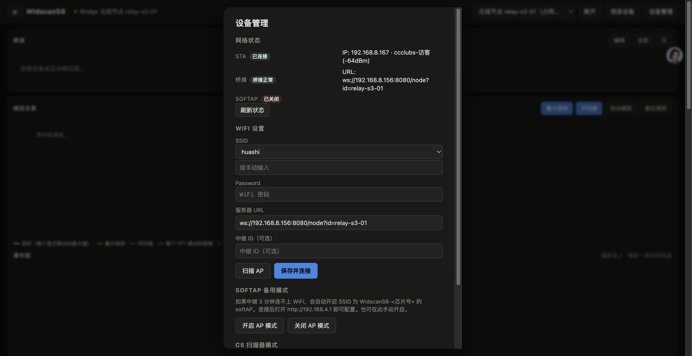

系统概述 — 硬件链路图解
Widscan58 的 WiFi 中继系统由三个组件组成，理解它们之间的关系是成功配置的前提。
（射频扫描头）
（WiFi 中继）
（Node.js 网关）
（前端 Dashboard）
各组件职责
| 组件 | 型号 | 职责 |
|---|---|---|
| 扫描头 | ESP32-C5-DevKitC-1 | 负责 5.8GHz 频谱扫描，通过 UART 把数据发给 S3 |
| WiFi 中继 | ESP32-S3-DevKitC-1 Micro | Wi-Fi STA 连路由器；WebSocket 连 serve.mjs；同时是 UART 主控 |
| 网关 | Node.js serve.mjs | 统一入口：HTTP 静态文件 + WebSocket 串口桥接 + UDP 节点发现 |
| 前端 | 浏览器 | 频谱图、频道配置、设备管理面板 |
两种板卡角色
NET STATUS、NET SCAN、NET AP）都只发给 S3 WiFi 中继，不会发给 C5 扫描头。如果你把设备管理面板连到 C5（直接 USB 插电脑那块），所有 NET 命令都会返回 ERR command。
准备工作 — 启动 serve.mjs
在电脑终端里运行以下命令：
cd /path/to/widscan58-clone/repo/web
node serve.mjs --host 0.0.0.0 --port 8080 --dir dist启动成功后会看到类似输出：
Serving .../dist
Serial bridge: ws://:8080/serial?ep=serial:/dev/cu.usbmodem*
Relay nodes: ws://:8080/node?id=
Discovery: UDP port 45124 浏览器打开 http://localhost:8080，看右上角的端点选择器：
cu.usbmodemXXXX— USB 直接插电脑的板卡（C5 或 S3）无线节点 relay-s3-01— 通过 WiFi 连上来的 S3 中继
「无线节点」只有当 S3 中继已连到路由器、且 serve.mjs 正常运行时才会出现。
步骤 1 · 连接中继节点
在顶部端点选择下拉框中选 无线节点 relay-s3-01，点击「连接」按钮。

- S3 中继是否已在 NVS 里保存了正确的 WiFi SSID/密码
- 路由器是否正常工作（S3 的 STA 模式是自动连路由器的）
- 如果连不上，跳转到本文档 SoftAP 备用模式 用浏览器直接配
连接成功后，端点选择器旁的按钮变成「断开」，频谱图区域开始刷新。

步骤 2 · 打开设备管理面板
在顶部按钮栏里找到「设备管理」（在「烧录设备」右边），点击打开 WiFi 设置面板。
步骤 3 · 查看网络状态
面板默认显示空状态（所有 chip 为灰色 —），需要手动点一次「刷新状态」让面板去问板子当前的网络配置。

面板有 4 个状态 chip，颜色含义如下：
| Chip | 含义 | 🟢 up | 🔴 down | 🟡 dial/q |
|---|---|---|---|---|
| STA | WiFi 站点模式（连路由器） | 连上了路由器，会显示 IP/SSID/RSSI | 没连上 | 正在重连 |
| 桥接 | WebSocket 到 serve.mjs | 桥接正常 | WS 断开 | 正在拨号重连 |
| SoftAP | 本机热点模式 | 热点已开启（救援状态） | 热点关闭（正常状态） | — |
| C5 模式 | 射频扫描协议 | 取值：MONITOR（频谱扫描）或 RH（RotorHazard 计圈） | ||
当 STA chip 显示绿色时，下方会多出一行：
IP: 192.168.8.167 · ccclubs (-62dBm)
{"on":true,"ssid":"ccclubs","ip4":"192.168.8.167","rssi":-62,"sta":true,"ws":true}
步骤 4 · 扫描周围 WiFi
点「扫描 AP」按钮，S3 中继会临时启动 APSTA 模式、把驱动带到扫描态、把周围所有 WiFi 列出来（按 RSSI 从强到弱排序，最多返回 20 个）。
扫描完成后，SSID 下拉框从「（无 — 点击扫描）」变成列出所有 AP，例如：

选一个 SSID，也可以手动在下方输入框里敲（优先使用输入框的值）。
步骤 5 · 保存并连接新 WiFi
SSID 选好后，把下面几个字段填满：
| 字段 | 必填 | 示例 | 说明 |
|---|---|---|---|
| SSID | ✅ | ccclubs-访客 | 下拉选择或手动输入 |
| Password | ✅（加密 WiFi） | 88190338 | 开放网络留空 |
| 服务器 URL | ✅ | ws://192.168.8.156:8080/node?id=relay-s3-01 | S3 连 serve.mjs 的 WebSocket 地址 |
| 中继 ID | 可选 | relay-s3-01 | 节点名，与 URL 里的 id 一致 |
服务器 URL 格式：ws://<serve.mjs 主机 IP>:8080/node?id=<中继 ID>
点「保存并连接」，前端会批量发 6 条命令到板子：
NET SSID ccclubs-访客
NET PASS 88190338
NET URL ws://192.168.8.156:8080/node?id=relay-s3-01
NET ID relay-s3-01
NET SAVE
NET ONSoftAP 备用模式 — 救砖指南
如果 S3 中继里存的 WiFi SSID/密码写错了、或者路由器暂时挂了，S3 的自动 fallback 机制会救你出来。
S3 中继拨号失败 6 次（约 3 分钟）后，固件自动从 STA 模式切到 APSTA 模式，启动一个开放热点：
| 参数 | 值 |
|---|---|
| SSID | Widscan58-<chipid>（芯片 ID 后 4 位，例如 Widscan58-87e8c20e） |
| 密码 | 开放（无密码） |
| IP | 192.168.4.1 |
| HTTP 端口 | 80 |
1. 手机或电脑连上 Widscan58-xxxx 这个 WiFi
2. 浏览器访问 http://192.168.4.1（手机上可能自动弹配置页）
3. 配置页提供两个接口：
| 请求 | 说明 |
|---|---|
GET /cfg | 读当前配置（SSID、URL 等） |
POST /cfg + JSON body | 写新配置 |
4. 填好正确的 WiFi 后点保存，板子自动重启。重启后连新 WiFi，再自动连 serve.mjs。
面板最下方「SoftAP 备用模式」区域有两个按钮：

- 开启 AP 模式 — 立刻启动热点（WiFi STA 会断开）
- 关闭 AP 模式 — 关闭热点，恢复 STA 拨号
C5 扫描器模式切换
| 模式 | 适用场景 | C5 行为 |
|---|---|---|
| MONITOR （默认） | 频谱扫描、频道配置 | 持续发二进制扫描帧 → 前端显示实时频谱图 |
| RH | RotorHazard 计圈比赛 | C5 不发扫描帧 → UART 安静 → NET 命令畅通 |
面板底部有「协议 MONITOR」和「协议 RH」两个按钮可切换。
常见问题排查
esp_wifi_scan_start() 需要 STA 模式已初始化。确认 STA chip 在绿色状态再扫描；或者重启 S3（断电重插）让 WiFi 驱动重新就绪。Widscan58-xxxx → 浏览器 http://192.168.4.1 改对配置。PROTOCOL MONITOR。cu.usbmodem21201）和连到 S3 relay 有什么区别？?force=1 URL 参数会强制踢掉旧的。前端已自动处理；Node 脚本测试时记得加。latin1 解码了原始字节。浏览器面板已验证中文 SSID（如「卓软科技」「ccclubs-访客」）能正常显示。